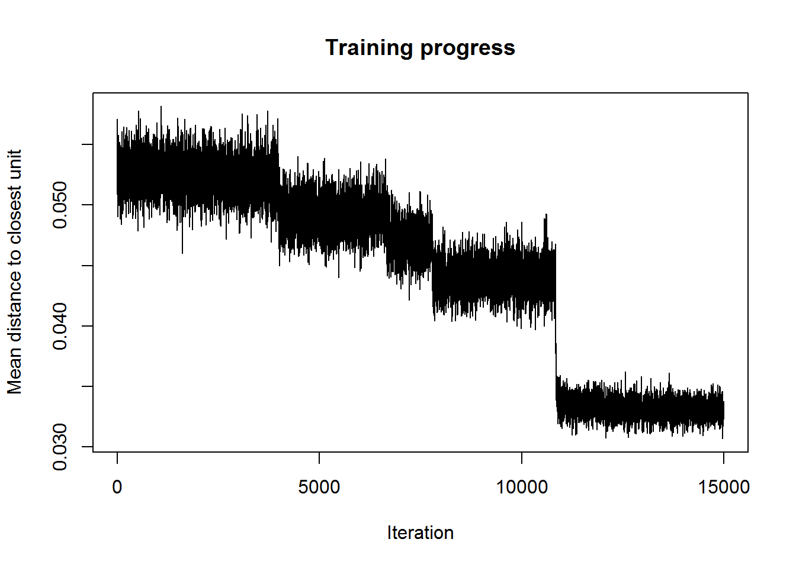
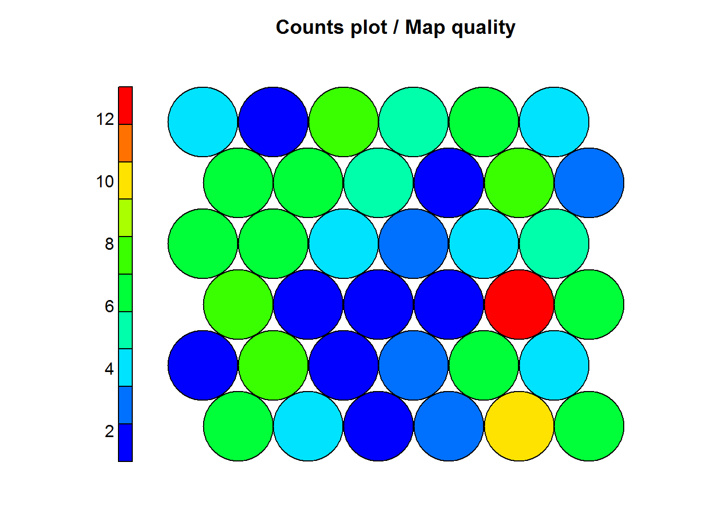
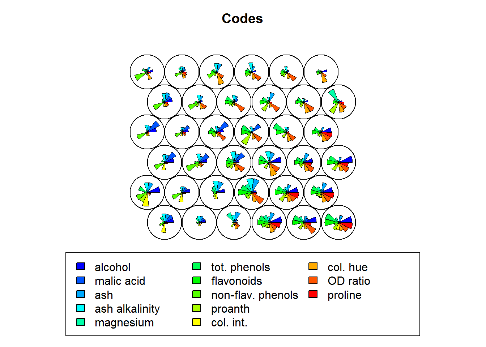
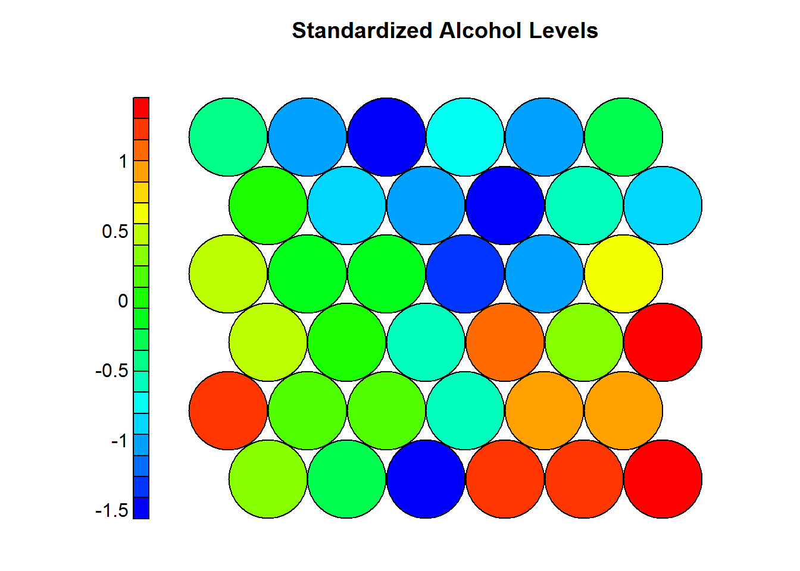
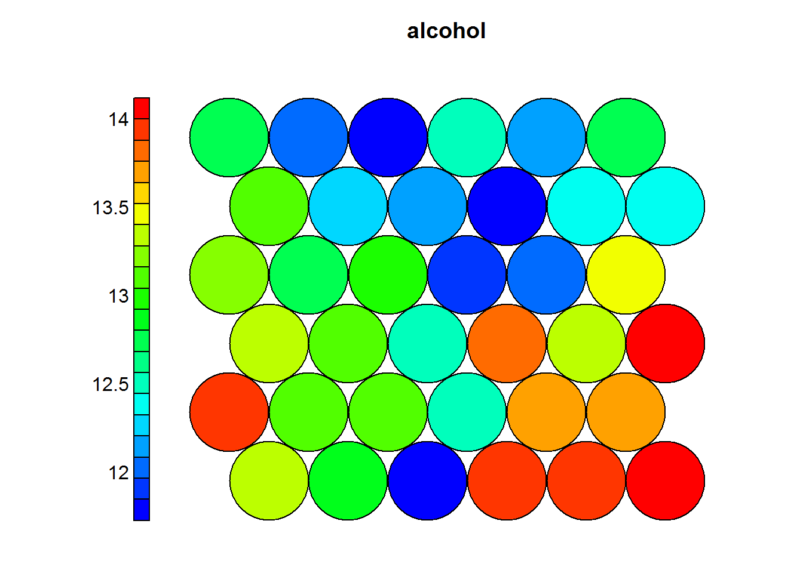

Chapter 4 Self Organizing Maps (SOM)
4.1 Other names:
- Self-Organizing Feature Map (SOFM).
- Kohonen Map.
- Kohonen Networks.
4.2 Generalities
- Self Organizing Maps belong to the family of Artificial Neural Networks.
- In the subgroup of Unsupervised Learning,
- To function they use a competitive learning strategy (winner takes all).
- They are considered to be a non-linear implementation of the Principal Components Analysis (PCA) algorithm.
Self Organizing Maps (SOM) were first described by Teuvo Kohonen (Kohonen 1995), others have extended his work and modified SOMs to tackle specific problems.
“The Self-Organizing Map is inspired by postulated feature maps of neurons in the brain comprised of feature-sensitive cells that provide ordered projections between neuronal layers, such as those that may exist in the retina and cochlea. For example, there are acoustic feature maps that respond to sounds to which an animal is most frequently exposed, and tonotopic maps that may be responsible for the order preservation of acoustic resonances.” (Brownlee 2011)
Different sensory inputs are maped into corresponding areas of the cerebral cortex in an orderly way. The map generated in the cerebral cortex is called a topographic map and it has two very important properties, (Bullinaria 2015):
- At each stage of representation, or processing, each piece of incoming information is kept in its proper context/neighborhood.
- Neurons dealing with closely related pieces of information are kept close together so that they can interact via short synaptic connections.
Following the principles observed in the sensory input processing by neurological structures , the previous two properties should be kept in an artificial intelligence algorithm looking to reproduce this phenomenon. In shorter words: the principle of topographic map formation is the escence of this process, where:
“The spatial location of an output neuron in a topographic map corresponds to a particular domain or feature drawn from the input space.” (Bullinaria 2015)
4.3 Penfield´s Homunculus
4.4 Algorithm
4.4.1 Conditions
- The data given to the algorithm must be continuous.
- The algorithm will perform better when fed high dimensional data.
- This algorithm will help in the process of
4.4.2 Steps of the algorithm
This section is based on the “Introduction to Neural Computation” course, taught by Dr John A Bullinaria at the University of Birmingham.
Self Organizing Maps follow the principle of self organization, composed of the following 4 steps:
- Initialization.
- Competition.
- Cooperation.
- Adaptation.
4.4.2.1 Initialization
All the connections weights (neurons or centroids) are initialized with small random values. Other authors use the the principal component (eigenvector) of the data in this step.
4.4.2.2 Competition:
For each input pattern, the neurons compute their respective values of a discriminant function which provides the basis for competition. The particular neuron with the smallest value of the discriminant function is declared the winner.
- Given the input space is \(D\) dimensional, the input patterns can be expressed as:
\[x = \{x_i:i=1,...,D\}\]
- The connection weights between the input units \(i\) and the neurons \(j\) in the computation layer can be expressed as:
\[w_j = \{w_{ji}: j = 1,...,N; i = 1,...,D\}\]
Where N is the total number of neurons.Discriminant Function
Now that the dimensions of the data and how they are related to the lattice in the SOM are clearer, the next natural step in the process is to define the discriminant function, SOM bases this on the squared Euclidean distance:
\[d_j(x) = \sum_{i=1}^D(x_i - w_{ji})^2\]
By doing this, the neuron whose weight vector comes closest to the input vector (most similar to it) is “declared” the winner.
This process allows us to map a continuous space given by the input to a discrete output space of neurons by a process of competition and a “winner takes all” approach.
4.4.2.3 Cooperation:
The winning neuron determines the spatial location of a topological neighborhood of excited neurons, thereby providing the basis for cooperation among neighbouring neurons. This lateral interaction within a set of neurons has been observed by neurobiologist in human and other brains. When one neuron fires, its closest neighbours tend to get excited more than those further away. This phenomenon allows the formation of a topological neighborhood that decays with distance in relation to the excited neuron known as the Best Matching Unit (BMU) in a SOM.
If \(S_ij\) is the lateral distance between neurons \(i\) and \(j\) on the grid of output neurons, the topological neighborhood will then be expressed as:
\[T_{ij,I(x)} = exp \left( \frac{-S^2_{j,I(x)}}{2\sigma^2}\right)\]
Where \(I(x)\) = the index of the winning neuron.
This has the following key properties:
- Maximal at the BMU.
- It decreases monotonically to zero as the distance goes to infinity.
- It is translation invariant, therefore independent of the location of the BMU.
Important note:
The process of self organization will work best if the size of \(\sigma\) of the neighborhood decreases with time. A popular approach has been an exponential decay:
\[\sigma(t) = \sigma_0\space exp(\frac{-t}{\tau_{\sigma}})\]
4.4.2.4 Adaptation:
The excited neurons decrease their individual values of the discriminant function in relation to the input pattern through suitable adjustment of the associated connection weights, such that the response of the winning neuron to the subsequent application of a similiar input pattern is enhanced.
In a topographic neighborhood not only the winning neuron gets its weights updated, but its neighbors will have their weights updated as well, although by not as much as the winner itself. In practice, the appropriate weight update equation is:
\[\Delta w_{ji} = \eta(t) * T_{j,I(x)}(t) * (x_i - w_{ji})\]
Where there is a time (\(t\), epoch) dependent learning rate \(\eta(t) = \eta_0 \space exp(\frac{-t}{\tau_\eta})\), and the updates are applied for all the training patterns \(x\) over many epochs.
Each learning weight update will move the weight vectors \(w_i\) of the BMU (winning neuron) and it’s neighbors towards the input vector \(x\). Repeated presentations of the training data thus leads to topological ordering.
4.5 Example
This example is based on material presented in Dublin for the 2014 R Regional Conference (Lynn 2014)
We will take the dataset wines found in the package kohonen (Ron Wehrens 2017), which shows the results of a chemical analysis of wines grown in the same region in Italy but derived from three different cultivars. The analysis determined the quantities of 13 constituents found in each of the three types of wines.
4.5.1 Summary of the dataset
library(kohonen)
data(wines)
summary(wines)## alcohol malic acid ash ash alkalinity
## Min. :11.03 Min. :0.74 Min. :1.360 Min. :10.60
## 1st Qu.:12.36 1st Qu.:1.60 1st Qu.:2.210 1st Qu.:17.20
## Median :13.05 Median :1.87 Median :2.360 Median :19.50
## Mean :12.99 Mean :2.34 Mean :2.366 Mean :19.52
## 3rd Qu.:13.67 3rd Qu.:3.10 3rd Qu.:2.560 3rd Qu.:21.50
## Max. :14.83 Max. :5.80 Max. :3.230 Max. :30.00
## magnesium tot. phenols flavonoids non-flav. phenols
## Min. : 70.00 Min. :0.980 Min. :0.340 Min. :0.1300
## 1st Qu.: 88.00 1st Qu.:1.740 1st Qu.:1.200 1st Qu.:0.2700
## Median : 98.00 Median :2.350 Median :2.130 Median :0.3400
## Mean : 99.59 Mean :2.292 Mean :2.023 Mean :0.3623
## 3rd Qu.:107.00 3rd Qu.:2.800 3rd Qu.:2.860 3rd Qu.:0.4400
## Max. :162.00 Max. :3.880 Max. :5.080 Max. :0.6600
## proanth col. int. col. hue OD ratio
## Min. :0.410 Min. : 1.280 Min. :0.480 Min. :1.270
## 1st Qu.:1.250 1st Qu.: 3.210 1st Qu.:0.780 1st Qu.:1.930
## Median :1.550 Median : 4.680 Median :0.960 Median :2.780
## Mean :1.587 Mean : 5.055 Mean :0.957 Mean :2.604
## 3rd Qu.:1.950 3rd Qu.: 6.200 3rd Qu.:1.120 3rd Qu.:3.170
## Max. :3.580 Max. :13.000 Max. :1.710 Max. :4.000
## proline
## Min. : 278.0
## 1st Qu.: 500.0
## Median : 672.0
## Mean : 745.1
## 3rd Qu.: 985.0
## Max. :1680.04.5.2 Training Phase
library(kohonen)
#SOM grid/lattice
som_grid <- somgrid(xdim = 6, ydim = 6, topo = "hexagonal")
#Standardazing dataset
wines.sc <- scale(wines)
#Setting the seed
set.seed(123)
#Training SOM
som_model <- som(wines.sc,
grid = som_grid,
rlen = 15000,
alpha = c(0.05,0.01),
keep.data = TRUE)4.5.3 Visualization
4.5.3.1 Training progress
Once a stable plateu is shown in the plot, one can assume that the Euclidean distance from each node’s weights to the samples in the database represented by that node (or neuron) has reached it’s lower value. If the curve in the plot is continually decreasing more iterations will be needed.
plot(som_model, type = "changes")
4.5.3.2 Node Counts
This steps helps us visualize how many samples are mapped to each neuron on the map. This can be used as an indicator of map quality. Some key points:
- Sample distribution should be relatively uniform (colors or shades similar) throughout the map.
- Large values in a map area are a sign that a larger map is needed.
- Empty neurons are a sign that the map is to large.
- It is costumary to aim for 5 to 10 samples per neuron for an ideal map.
source('coolBlueHotRed.R')
plot(som_model,
type = "count",
palette.name = coolBlueHotRed,
main = "Counts plot / Map quality")
4.5.3.3 Neighbor Distance
This is also called the U-Matrix and it is a visualization of the distance between each neuron and it’s neihgbors.
Key points:
- It’s usually visualized using a grayscale.
- Areas of low neighbor distance indicate groups of similar neurons.
- Areas of high nighbor distance indicate that neurons are more dissimilar.
- The U-Matrix can be used to identify clusters.
plot(som_model,
type = "dist.neighbours",
palette.name = gray.colors,
main = "Nighbour distance plot/ U-Matrix")
4.5.3.4 Weight vectors / Codes
These codes are made up of normalised values of the original variables from the dataset used to train the SOM. Each node weight vector is similar (representative) of the samples mapped to that node. By doing this visualization it is possible to see patterns in the distribution of the values of variables.
Key points:
- The visualization of >7 variables with this approach is usually of not much use.
plot(som_model,
type = "codes",
main = "Codes",
palette.name = coolBlueHotRed)
4.5.3.5 Heatmaps
One of the most important visualization of a SOM. It allows for a weight space view of a single variable (distribution). Usually, multiple heatmaps are produced based on different variables and then compared to see if areas and/or patterns of interest are discovered. Key points:
- When generating multiple visualizations of the same SOM, individual sample positions do not move form one visualization to another, the map is simpleyu colored by different variables.
codes <- as.data.frame(as.list(som_model$codes))
#Standardized values
plot(som_model,
type = "property",
property = codes$alcohol,
palette.name = coolBlueHotRed,
main = "Standardized Alcohol Levels")
Heat maps are usually presented to non-technicall people, therefore it is prefered to use the normal values as they appeared on the original dataset. The following heatmaps are presented with values previous to standardization.

Figure 4.1: OD Ratio in Wines
Figure 4.2: Magnesium levels in Wines
Figure 4.3: Total Phenols levels in Wines
4.5.3.6 Drawing Conclusions
Understanding how a Self Organizing Map is generated is of key value to run these analysis. Once a clear understanding of the mathematics and algorithmia is achieved then the process of training the SOM can start.
Special attention must be put in the quality of the SOM, the right amount of ephocs and the size of the grid as well.
In the previous example one can see that wines with high levels of alcohol tend to have low OD ratios and high levels of total phenols. Combined with domain knowledge these assosiations can be put to good use in the field.
References
Kohonen, Teuvo. 1995. “Self-Organizing Maps, Volume 30 of Springer Series in Information Sciences.” Springer, Berlin, Heidelberg.
Brownlee, Jason. 2011. Clever Algorithms: Nature-Inspired Programming Recipes. Jason Brownlee.
Bullinaria, John A. 2015. “Self Organizing Maps: Fundamentals.” http://www.cs.bham.ac.uk/~jxb/INC/l16.pdf.
Lynn, Shane. 2014. “Self-Organising Maps for Customer Segmentation Using R.” January. https://www.slideshare.net/shanelynn/2014-0117-dublin-r-selforganising-maps-for-customer-segmentation-shane-lynn.
Ron Wehrens, Johannes Kruisselbrink. 2017. Supervised and Unsupervised Self-Organising Maps. https://cran.r-project.org/web/packages/kohonen/.